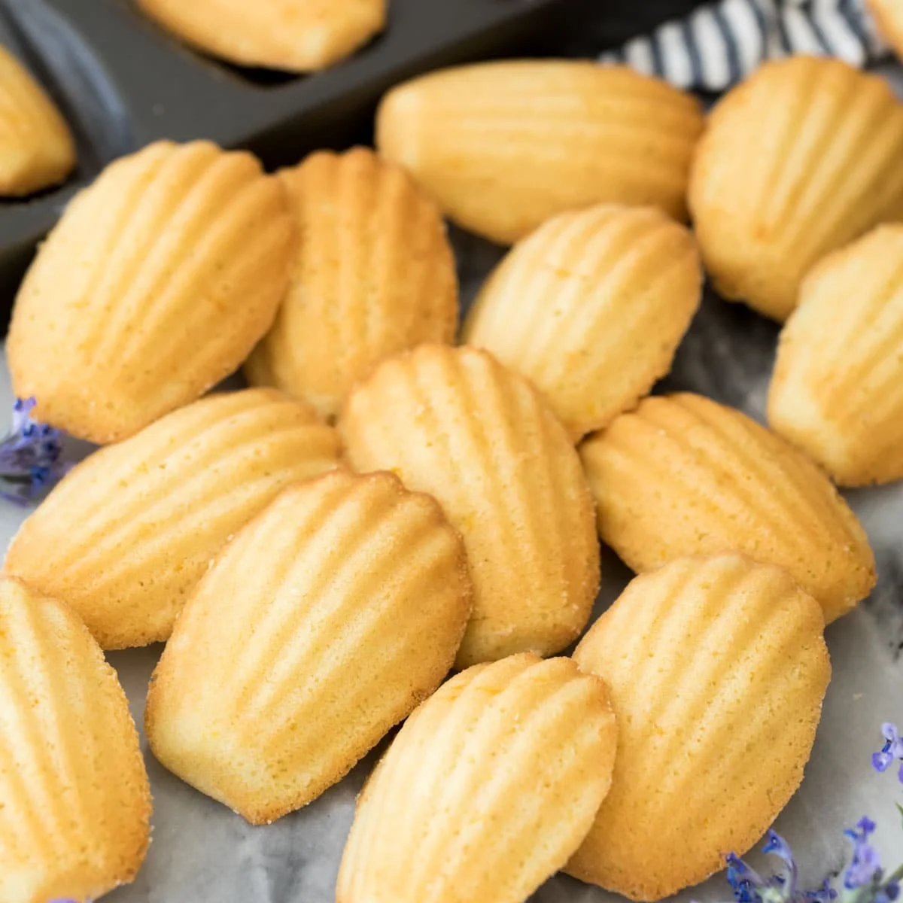

Prep
1 hour 15 minutes

Classic French
Small French sponge cakes baked in shell-shaped molds with a soft, buttery interior and lightly crisp exterior. Enjoy fresh from the oven or store at room temperature to experience their sweet, crispy flavor. Though simple in ingredients, their airy texture and elegant shape make them feel refined in presentation.
1 hour 15 minutes
10–12 minutes
1 hour 30 minutes
18–20 madeleines
2 madeleines
Beginner–Intermediate
Dietary Restrictions: Contains dairy, eggs, and gluten.
Serve warm, about 5–10 minutes after baking, when the edges are lightly crisp and the inside is still soft.
Store in an airtight container at room temperature for up to 2 days. They are best the same day they are baked.